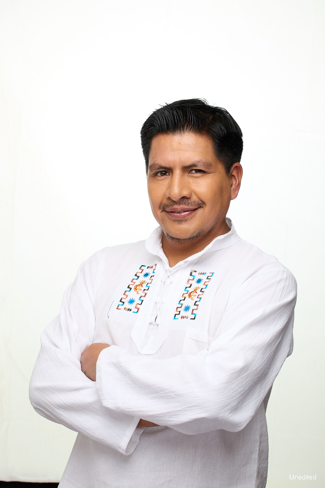

AI/ML Engineer with 7+ years building production AI systems — LLMs, agentic AI, and cloud-native architectures — for companies turning AI into measurable business outcomes. Echoing Green Fellow and Chevening Scholar (MSc Artificial Intelligence, University of Southampton).
Cofounder of OA7 (Ecuador) and Fractal Synergy (US) — ventures applying geospatial AI and emerging technology to real-world challenges.
Available for AI Engineering roles · Fractional CTO · Mentoring · Speaking
| Mar 2026 | I gave a presentation on “Using AI for productivity, innovation, and process automation” at TechTies Ecuador 2026, organized by Diplomatic Mission of the United States of America. |
|---|---|
| Nov 2025 | I gave a presentation on “Agentic AI and the Limitations of the Transformer Architecture” at DevFest 2025, organized by Google Developer Groups. |
| May 2025 | I participated at panel "AI for Prosperity" invited by DCN Global. |
| Feb 2025 | I have been accepted as a Perplexity Business Fellow. |
| Aug 2024 | I was awarded Echoing Green Fellow with my venture OA7. |
| Apr 2024 | I was awarded Young Leaders of America Initiative Fellow with my venture OA7. |
| Sep 2020 | I got my master's in Artificial Intelligence at University of Southampton. |
| Jul 2019 | I was awarded with Chevening Scholarship by FCDO (United Kingdom). |
Selected posts on AI engineering and applied ML. Read all on Medium →